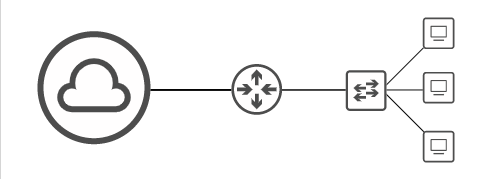

Network Devices
In this section we will cover what a network is and the fundermentals.

Diagram of a network
What is a network?- A digital telecommications network that allows nodes to share data/communicate
Below are some of the different nodes that you will find in a network, we will explain what they all do later.

Example of network nodes
Building a Network
We will gradually build our network from scratch, so we can undertand the different network nodes and the role they play.
If we connect two computers togther with a cable then have a (very basic) network! With the two computers connecte, this allows them to be able to communicate to eachother.

Computers that are connected to eachother creates a network
Clients & Servers
We wil cover the definition of a client and a server, and also show some examples of what they look like.
- Client
- Is a device that access a service made by a server

- Example of clients
- Server
- A device that provides functions or services for clients

- Example of servers
Your desktop can also be a server; if we look at the building a netowork image we can say one PC is the server and the other is the client. For example, if a computer was sending a file to anotehr, the computer recieving the file would be the client, and the computer sending the file would be the server.

Interaction between client and server when sending a file

Interaction between client and server when watching a video

Interaction between client and server when making a call
Switches
We will look at what switches are and how they are used within a network.

These are Cisco entrprise grade switches and are used by many enterprises
Because we do not directly connect our clients and servers to each other, we use switches to act as the middleman between the connections. They have the ability to host multiple connections becuase most switches usually have over 24 ports and they can accommondate both connectivity and hosting for the end host (clients & servers).

Switches can house multiple connections for clients and servers
Switches forward the traffic of the end hosts within a LAN (Local Area Network). This is basically a bunch of end hosts/devices that are on the same area - this could be the same office floor, the entire office (if it was small), or even your LAN at home. Devices that are connected to the switch will be able to communicate with eachother; however switches cannot communicate with other switches across the internet.

Switches can only communicate to devices in the same local network
As you can see switches can only has access to devices in the same network. In order to connect to other devices, like for the New York branch to connect to the Tokyo branch they would need a router to communicate over the internet.
Catalyst switches are Cisco's enterprise grade switches which are used by many enterprises to connect their LANs.
Routers

Typical Cisco ISR enterprise routers
Routers provide connectivity between other switches over the internet. They have less ports than switches and some can be found at the front of the device or at the back of the device. The routers in this image are Cisco enterprise routers that provides connections between other LANs. This allows data to be sent across the internet.

Routers allow LANs/switches to comminucate over the internet
Firewalls
There are two types of firewalls: host-based firewalls and network firewalls.
- Host-Based Firewalls
- Software applications that fileter traffic entering and exiting the host machine (like a PC, laptrop, etc). Most PCs have built in firewalls.
- Network Firewalls
- Hardware devices that control network traffic entering & leaving the network.
In this course we will focus on network firewalls.

Cisco 'Next-Generation' network firewalls
The images above shows you what a typical 'Next-Generation' Cisco firewall looks like. Older models like the ASA (Adaptive Security Appliance) is Cisco's classic model while the two in the image are Next-Gen because they come with extra security features like an IPS (Instrusion Prevention System).
Firewalls monitor and control netwrok traffic based on configured security rules that tells them which traffic to accept or deny. These firewalls can be placed inside or outside of the netwrok, to protect the end hosts within (eg PCs & servers etc).
This means firewalls are not directly connected to the end host.

The firewall protects end hosts in both New York & Tokyo
If configured properly, the PCs from New York will be able to access the servers from Tokyo and vice versa.

You configure which end hosts are allowed access to the network
It will also block anyone outside of the network trying to access the PCs in New York or servers in Tokyo.

Protects the network from outsiders
REMEMBER !!
- A host can refer to any type of network node.
- A client access/recieves a service, while a server provides the service.
- The same device can be a server is some situations, and a client in other situations.
- Cisco's enterprise grade switches which are used by many enterprises to connect to their LANs.
- LANs are local area networks that provide connectivity to local devices.
- Routers allow communication between LANs/switches. They also allow data to be sent to other devices this way.
- Routers have less ports than switches.
- There are two types of firewalls, host-based firewalls & network firewalls.
- Network firewalls control traffic within the network. It stops outsiders from accessing the network.
- Firewalls can also connect to multiple networks.
- There are more network devices which we will cover!
Download the flashcard for this session and leave a tick on the notes once completed twice.